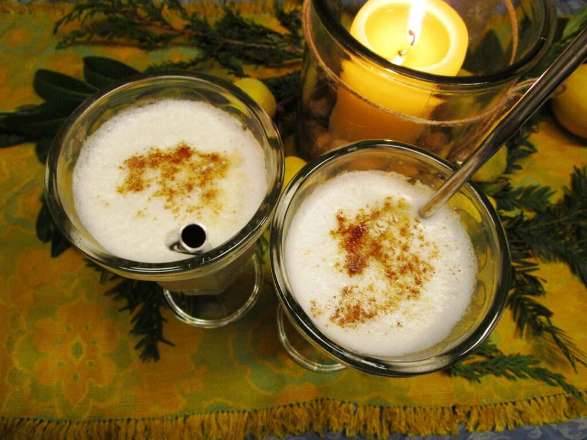

Odin's Cream de Bastarde

Description
Vikings never had to diet, physical exhaustion became a part of Odin's life from a very early age.
Next time you have an intense workout why not enjoy this traditional dessert? Go completely Medieval on some egg-whites and milk (the two most important ingredients.)
Here's an OG description:
Take þe whyte of eyroun a grete hepe, & putte it on a panne ful of mylke, & let yt boyle; þen ſeſyn it so with ſalt an hony a lytel þen lat hit kele, & draw it þorw a ſtraynoure, an take fayre cowe mylke an draw yt with-all, & ſeſon it with ſugre, & loke þat it be poynant & Doucet: & ſerue it forth for a potage, or for a gode bakyn mete, wheder þat þou wolt.
Ingredients
- Two cups of cow's milk, any kind
- Eight egg whites, gently beaten
- Three tablespoons of honey
- Salt to your liking
- One teaspoon of cane sugar
- Choice herbs, spices, and fruits
Steps
- Set aside a quarter cup of milk. Add the remaining milk and egg whites to a saucepan. Over low heat, bring the mixture to a boil, whisking continuously.
- Once your liquid reaches a rolling boil, remove it from heat, taking care to continue whisking fervishly. Add your salt and honey. Return the saucepan to low heat and continue stirring. In five to ten minutes your concoction will reach ultimate thickness.
- Let the thick bastard cream cool to room temperature. Pour cooled goo through a sieve (a fine-meshed colander.) Discard the liquid runoff. Take a spoon to break up your clumpy lumps.
- Transfer the thickness into your favorite bowl, add the reserved milk from step one.
- It's recommended that you garnish your creme bastarde with nutmeg, cane sugar, and your favorite fruits. But it's your dessert, do whatever makes your tastesbuds tingle.